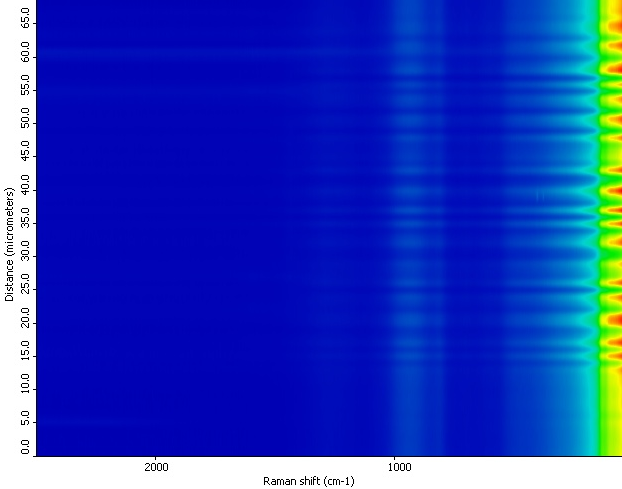
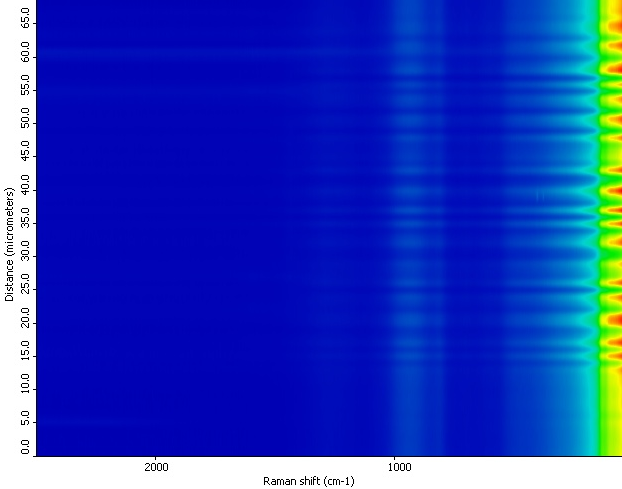
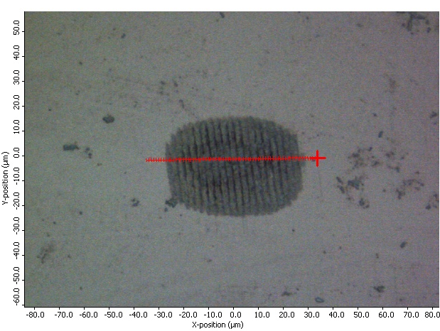

Domaine de recherche :
laser et optique non linéaire.
Je m'intéresse, dans mes travaux de recherche, à l'aspect fondamental et appliqué de l'optique/optique non-linéaire, principalement la dynamique des systèmes lasers et l'étude des non-linéarités induites par les lasers dans des milieux transparents.
Mes intérêts de recherche (aspect fondamental et appliqué) peuvent être résumés dans :
- Études des systèmes à fibres optiques,
- Études de la dynamique des systèmes non-linéaires et dissipatifs,
- Études des interactions d'un grand nombre de solitons dissipatifs,
- Développer des méthodes de contrôle dans les systèmes optiques,
- Réalisation et optimisation des sources ultra-courtes et des lasers multi-impulsionnels,
- Contrôle de la dynamique temporelle du laser via le spectre optique,
- Interaction source laser – matière,
- Étude des non linéarités dans les verres,
- Étude de la cinétique des réseaux photo-induits,
- Elaboration et réalisation de banc de mesure non agressive.
 

